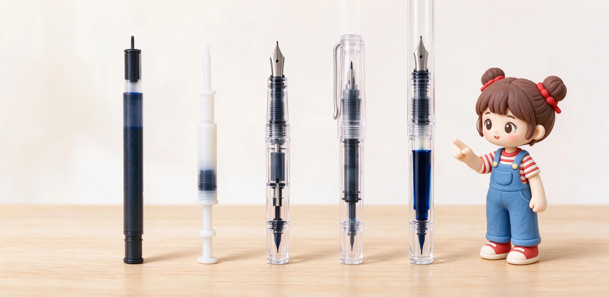

語意摘要：鋼筆上墨主要分卡式墨水管（拋棄式卡水）、吸墨器（裝在卡水筆上吸瓶墨）、活塞上墨（整支筆桿當儲墨槽，約 2ml）與真空上墨（容量最大、附止水閥）。卡式最乾淨好帶、適合新手與旅行；吸墨器兼顧彈性與成本；活塞與真空裝墨多、適合大量書寫者，但只能用瓶裝墨、清洗較麻煩。
一張表先看懂四種機制
上墨機制聽起來名詞一堆，其實可以從『裝多少墨水、麻不麻煩、能不能帶卡水』三個維度快速比較：
| 機制 | 大約容量 | 方便度 | 能不能用卡水 |
|---|---|---|---|
| 卡式墨水管 | 約 0.5ml | 插了就寫、最省事 | 本身就是卡水 |
| 吸墨器 | 約 0.5–0.7ml | 要吸瓶墨，但可換色 | 同筆可改用卡水 |
| 活塞上墨 | 約 1.5–2ml | 裝得多、需轉尾 | 不能，只能瓶墨 |
| 真空上墨 | 約 2–3ml | 容量最大、有止水閥 | 不能，只能瓶墨 |
容量數字看起來小，但鋼筆本身省墨，一次吸滿通常能寫好幾頁。活塞與真空多出來的容量，最大的好處是『不用常回去蘸墨』，對每天寫很多的人很有感。
卡式墨水管（卡水）：新手與旅行的起點
卡式墨水管就是預裝好墨水的拋棄式塑膠管，拆開插進筆握後方、聽到喀一聲就定位，直立等一兩分鐘讓墨水流到筆尖就能寫。全程不碰瓶裝墨、不髹手，外出、上學、辦公室換色最乾淨。
缺點是單位成本高、顏色有限、容量小。以百樂 Kakuno 為例，它用專屬的 IC-50 卡水，一盒好幾枝，適合帶著走；但長期每天寫，卡水的錢很快就追上一瓶罐裝墨。
吸墨器：卡水筆的升級，兼顧兩邊
吸墨器（converter）形狀跟卡水差不多，只是它是可重複使用的小幫浦，裝在本來吃卡水的筆上，就能把瓶裝墨水吸進來。好處是你不用換筆，同一支筆想省事時插卡水、想省钱時裝吸墨器吸瓶墨，兩全其美。
它的缺點就是容量小（跟卡水差不多），而且屬於外接配件，裝在筆裡會佔掉一點空間。多數入門與中階日系筆（Custom 74、寫樂、白金）都是卡水／吸墨器雙相容，這也是為什麼它是最多人的預設答案。

活塞上墨：把整支筆桿當儲墨槽
活塞上墨（piston）是在筆桿內部裝一支會轉動的活塞，旋轉筆尾時活塞前後移動，直接把墨水吸進整個筆桿。因為筆桿本身就是儲墨槽，容量常達 1.5 到 2ml，大約是吸墨器的三倍。
代價是：它不能用卡水（筆桿已經被機構佔滿），只能吸瓶裝墨；而且機構藏在筆桿裡，要清潔時得讓整支筆自己吸水沖乾，比較麻煩。德系的 Pelikan、日系的百樂 Custom 823（真空）都是這類大容量機構的代表。適合每天大量寫、不想常回頭吸墨的人。
真空上墨：容量最大、旅行最穩
真空上墨（vacuum）用類似幫浦的原理，先把空氣抽出、再放開讓墨水被吸入，容量通常是所有機制裡最大的（2ml 以上）。百樂 Custom 823 就是代表性的真空上墨示範款，透明筆桿還能直接看到墨水剩多少。
對常搭飛機的人來說，真空與部分活塞機構附有止水閥，氣壓變化時比較不會漏墨——這是旅行時很實在的優點。但同樣只能用瓶裝墨、清潔較繁瑣，且價位偏高，屬於進階選擇。
到底怎麼選？照用量與場景對號
- 新手、學生、常帶出門：卡式墨水管先上手，最不髹手。
- 寫了一陣子想省钱、玩顏色：買同廠吸墨器，改喝瓶裝墨。
- 每天大量書寫、不想常吸墨：考慮活塞上墨款。
- 常搭飛機、追求大容量與防漏：真空上墨（如 Custom 823）。
常見問題 FAQ
卡式墨水管跟吸墨器哪個划算？
活塞上墨為什麼比較貴？
真空上墨有什麼優點？
上墨方式會影響出墨順不順嗎？
活塞跟真空筆清洗很麻煩嗎？
資料來源與核實依據
- Fountain Pen Filling Mechanisms Explained（活塞優缺點、容量、清潔）（Pen Heaven）
- How to Choose a Fountain Pen Filling System（容量、旅行壓力、換色）（Fountain Pen Revolution）
- Piston filler vs converter（約 2ml 容量、適合重度書寫）（Hörner）
- カスタム 823（真空式、透明示範筆）（PILOT 官方）
相關文章推薦

鋼筆新手完全指南：第一次買鋼筆前該懂的 10 件事
鋼筆不難入門，難的是第一支就買對：筆尖選 F、預算抓 300 到 800 元、先從卡式墨水管開始，九成新手不會後悔。

鋼筆多久洗一次？鋼筆清洗、換墨水與收筆完整步驟
鋼筆其實不用天天洗，但有兩個時機一定要沖：換顏色前、跟要放超過兩週不寫時。用室溫清水把筆舌沖到水變清，是所有保養的基本功。

百樂鋼筆怎麼選？Kakuno、Custom 74、Custom 823 經典系列盤點
百樂強在『一條龍』：從 NT$380 的 Kakuno 入門，到 14K 金尖的 Custom 74，再到真空上墨的 Custom 823，你可以從頭用到尾都不換牌子。